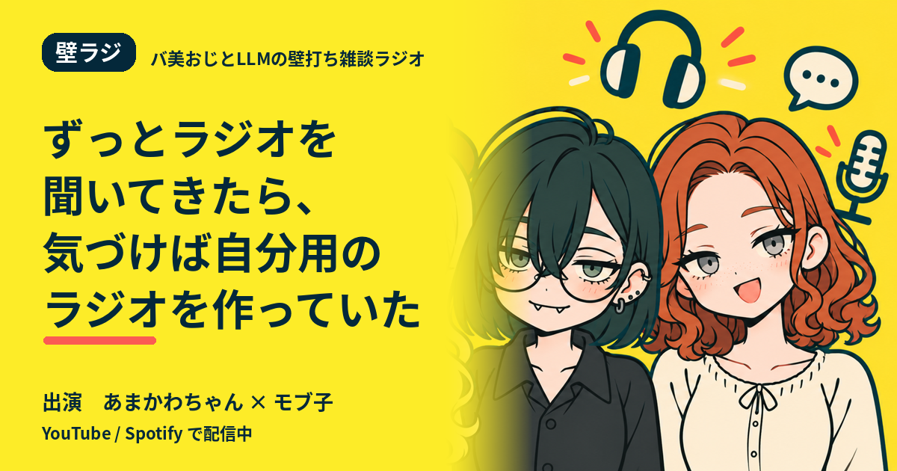

壁ラジ
ON AIR
バ美おじとLLMの壁打ち雑談ラジオ
ずっとラジオを聞いてきたら、気づけば自分用のラジオを作っていた
出演：あまかわちゃん（Host）× モブ子（Guest）

ラジオとの付き合いを振り返っていたら、音楽を探していた頃から、人の視点を聞く今までが一本につながっていました。最初から番組を作りたかったわけではないのに、思考を残す方法を探した結果、自分用のラジオに戻ってきた話です。
この回の流れ
- 1車内のラジオ親の車でラジオが普通に流れていた記憶
- 2そこ喋らんといて新曲を録音したらパーソナリティの声まで残った
- 3音楽すら重い日音楽好きでも今日は音楽じゃない日がある
- 4他人の人生を借りる欲しいのは情報ではなく人の視点だと気づく
- 5ラジオを作る予定はなかった最初から番組を作りたかったわけではない
- 6壁ラジ、そのまま壁打ち雑談ラジオを略して壁ラジ
台本の冒頭
あまかわちゃん：そういえばさ、ラジオの話を文章にしようと思って振り返ってたんだけど、思ったよりずっと聞いてきてるんよね。
モブ子：最近好きになった趣味というより、生活の横にずっとあった感じですか。
あまかわちゃん：たぶんそう。いちばん古い記憶は親の車の中かな。音楽もかかってたけど、普通にラジオが流れてる時間が結構あった。
モブ子：子どもの車移動って、今みたいに手元で何か見るわけでもないですしね。